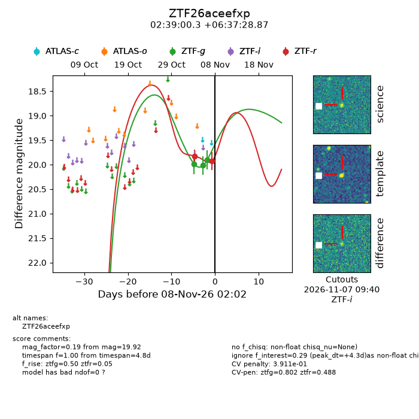
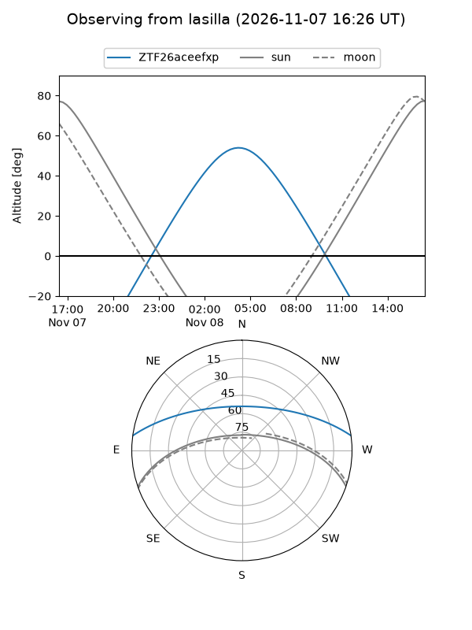
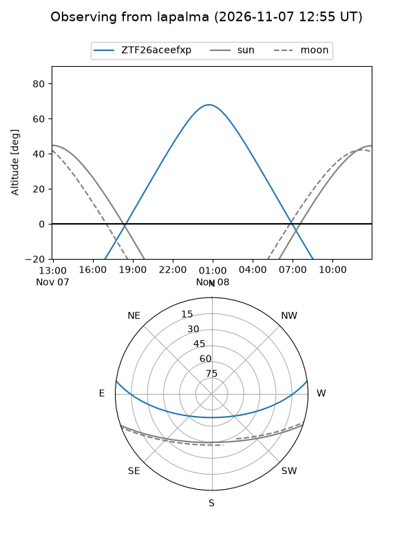
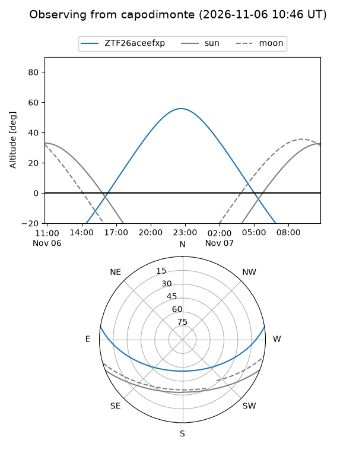
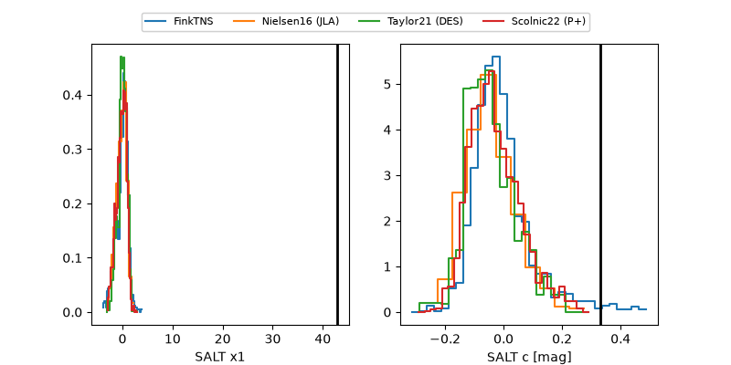

ZTF26aceefxp
Target ZTF26aceefxp at 2026-11-08 02:04
Aliases and brokers:
FINK-ZTF: ztf.fink-portal.org/ZTF26aceefxp
Lasair-ZTF: lasair-ztf.lsst.ac.uk/objects/ZTF26aceefxp
ALeRCE-ZTF: alerce.online/object/ZTF26aceefxp
Direct TNS query: direct search
alt names
ZTF26aceefxp (ztf,fink_ztf)
Coordinates:
equatorial (ra, dec) = 39.7512,+6.62469
equatorial (HMS+DMS) = 02:39:00.30,+06:37:28.87
galactic (l, b) = (164.4988,-47.37847)
Flags:
likely cv: !!
CV pen: 0.3910581830894037
peak dt: +4.3
Photometry:
last ztfg=19.90, ztfr=19.92
3 ztfg, 2 ztfr detections
Lightcurve

Visibility



Additional plots
